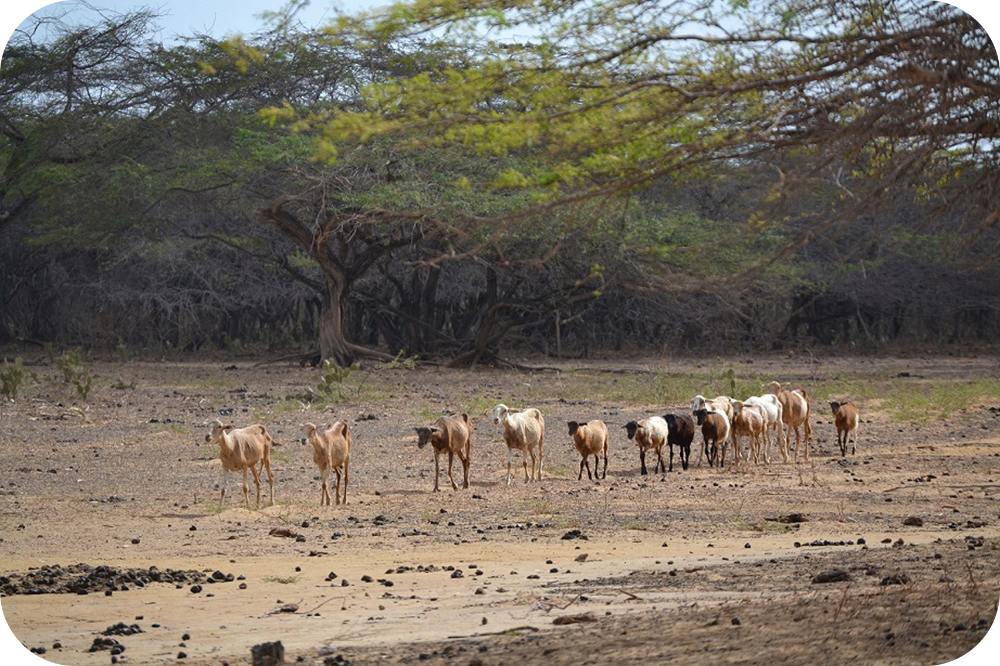
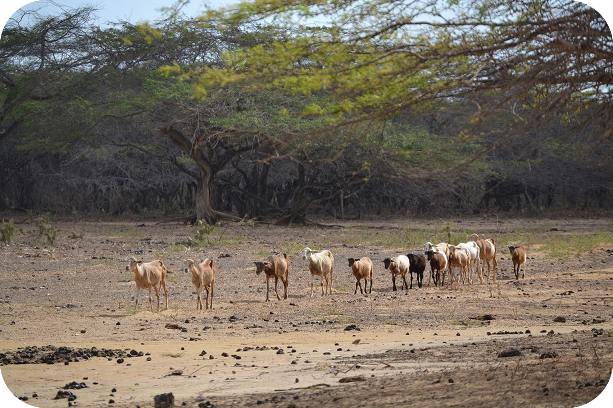

CULTURA WAYUU
“ Una herencia ancestral viva ”
El Pueblo Wayuu

Los Wayuu habitan en la zona norte de Colombia y Venezuela, concretamente en el Departamento de La Guajira y en el Estado Zulia en Venezuela. No se sabe con seguridad su origen, los historiadores estiman que pudieron haber llegado de las Antillas y la región Amazónica. Cuando los conquistadores españoles llegaron a la península de La Guajira, los wayuu ya estaban organizados bajo sus usos y costumbres, a pesar de que las misiones católicas trataron de quebrantar sus creencias, mantuvieron buena parte de las mismas.

Lengua y Tradicion Oral

La lengua wayuu, se denomina Wayunaiki, perteneciente a la familia lingüística Arawak, se habla en toda la península de La Guajira con extensión en el Estado Zulia en Venezuela. Esta lengua aún conserva su vitalidad lingüística.
"A través de la historia, el principal medio para la transmisión de saberes y toda la cosmovisión es la oralidad, mediante su lengua nativa"
Los miembros de esta etnia expresan sus sentimientos, emociones, vivencias, mitos, leyendas, tradiciones milenarias de generación en generación a través de la oralidad, esta es una forma de mantener vivas sus creencias y manifestaciones más auténticas.


Educación Tradicional

A los niños se les enseña a pastorear, a pescar y cultivar la tierra y a las niñas por lo general en el encierro, se les enseña a tejer, a las tareas de la casa y todo lo que tiene que ver con su rol de mujer en la comunidad. Por lo tanto, la lengua materna se constituye en el medio fundamental para su desarrollo individual, social, emocional y cognitivo, lo que lo identifica como miembro de su etnia.
 
